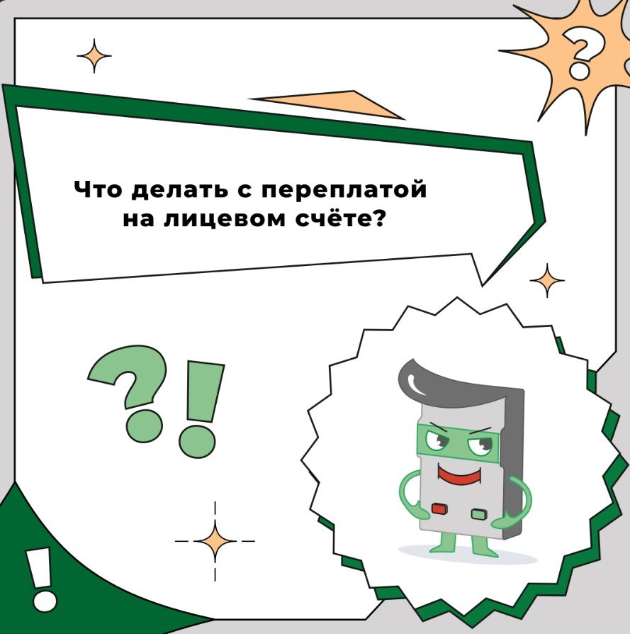
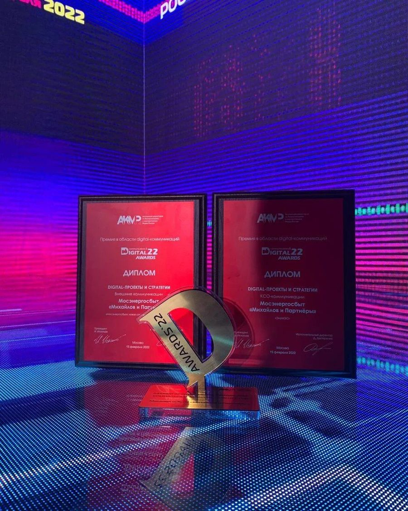

SMM для энергетики и химпрома: человеческий тон для консервативной аудитории и 3 награды AKMP
Проблема
В агентстве я вёл соцсети энергохолдинга Интер РАО и 7 его дочерних компаний. Задача — обновить стратегию соцсетей и сделать компанию дружелюбнее к клиентам.
Самым проблемным оказался канал Мосэнергосбыта — компании, которая обслуживает больше 8 млн человек в Москве и Московской области. Клиенты приходят в её соцсети, чтобы получить ответ на свой вопрос и быстро решить проблему. В комментариях под постами они жаловались на работу компании и на непонятные правила. Чаще всего не понимали, как складываются цены по тарифам и как проходит оплата. Для бизнеса это негатив в публичном канале; заказчик связывал такие вопросы и с нагрузкой на колл-центр. Данных колл-центра я не видел.
Ещё один проект агентства — соцсети Тольяттиазота, крупного химического предприятия. Основная аудитория — сотрудники с детьми. Для них я написал комикс.
Контекст и ограничения
- Стратегия: в 2021 году агентство предложило Мосэнергосбыту уйти во ВКонтакте от консервативного имиджа к открытому современному стилю общения. Под новую стратегию агентство сделало фирменный стиль для соцсетей.
- Масштаб: 8 компаний холдинга, контент-план на каждый месяц, 2–3 поста в неделю на каждую компанию плюс поздравления с государственными и профессиональными праздниками. У Мосэнергосбыта постов было больше, чем у остальных: во ВКонтакте 16–21 пост в месяц.
- Заказчик жёстко требовал к тематике и качеству контента: мемы, современные тренды и темы были под запретом — они не подходили консервативной аудитории каналов.
- Команда: я, менеджер проекта и дизайнер.
Моя роль
- Стратегию развития соцсетей разрабатывал в тандеме с менеджером проекта.
- Лично: составлял контент-план для 8 компаний, писал тексты публикаций, анализировал комментарии, составлял вопросы для интервью с сотрудниками и редактировал их ответы.
- Предложил рубрику «Вопрос-ответ» и рубрику о сотрудниках.
- Разработал экопроект #Эко_МЭСяц и контент для него.
- Придумал комикс для Тольяттиазота и написал сценарий 10 серий.
- Менеджер проекта отвечал за публикацию и коммуникацию с заказчиком, дизайнер — за визуалы. Фирменный стиль для соцсетей — работа агентства.
Исследование
Я разбирал комментарии под постами Мосэнергосбыта: в этом канале клиенты были активнее всего. Главный вывод: клиентам не хватает объяснений, как устроены тарифы и оплата.
Решение
- Рубрика «Вопрос-ответ». Темы брал из комментариев клиентов, посты отвечали на частые вопросы о тарифах и оплате.
- Рубрика #ПрофессияСвета о сотрудниках. Сотрудники рассказывали о своей работе и увлечениях. Я составлял вопросы для интервью и редактировал ответы. Цель — показать, что за компанией стоят живые люди, и сократить дистанцию с клиентами. Так компания заговорила живым тоном без мемов и трендов, которые заказчик запрещал.
- Экопроект #Эко_МЭСяц. Мосэнергосбыт попросил рассказать о своих мероприятиях по защите окружающей среды и об осознанном потреблении ресурсов. Я разработал проект и контент: лайфхаки и интересные факты об экологии. Посты проекта выходили в октябре 2021 года.
- Комикс для Тольяттиазота. Маскоты Толик Азотов и Аня уже были в соцсетях. Я придумал отправить Толика в прошлое, изучил историю химических открытий и написал сценарий 10 серий о главных достижениях химии.

Результат

- 3 награды AKMP 2021: «Digital-проекты и стратегии: внешние коммуникации» и «Социальные медиа & сообщество: ВКонтакте» — за обновлённую стратегию соцсетей; «Digital-проекты и стратегии: КСО-коммуникации» — за экопроект. Награды командные: стратегия — в тандеме с менеджером, контент-план и тексты — мои.
- ВКонтакте Мосэнергосбыта, апрель → октябрь 2021 (первые полгода моей работы): охват 36 993 → 48 668 (≈ +32%); ER 1,27% → 1,40%; лайки 169 → 225, комментарии 232 → 403, репосты 27 → 56 (≈ в 2 раза); подписчиков с 1 мая по 1 ноября стало на 964 больше.
- ВКонтакте Мосэнергосбыта, декабрь 2020 → декабрь 2021: подписчики 11 275 → 13 849 (≈ +23%), репосты 368 → 569 (≈ +55%), лайки 2 626 → 2 751 (≈ +5%), комментарии 4 357 → 4 813 (≈ +10%).
- Все соцсети Мосэнергосбыта, 2021 год к 2020-му: 39 602 подписчика (+73,42%), 22 013 реакций (+12,10%).
- Оговорки по метрикам Мосэнергосбыта: это результат всего канала и всей команды. Одновременно менялись стратегия и фирменный стиль, выросло число постов (16 → 21 в месяц). Вклад текстов отдельно не измерялся.
- Комикс без рекламы и вовлекающих вопросов сравним с предыдущим комиксом, у которого были и реклама, и вопросы (статистика ВКонтакте с выхода серий по 17.11.2026): на одну серию — около 92% его просмотров (4 460 против ≈ 4 873), репостов больше примерно на треть (3,0 против ≈ 2,2), лайков меньше на 31% (10,4 против ≈ 15,1).
- Оговорки по комиксу: сравниваются только два комикса; предыдущий вышел раньше и копил просмотры дольше; у него было платное продвижение.
Выводы
- Частые вопросы пользователей — готовое ТЗ на контент. Если клиенты постоянно спрашивают про тарифы и оплату, им не хватает объяснений. В интерфейсе я делаю то же: объясняю правила там, где у пользователя возникает вопрос.
- Реакция пользователей — обратная связь, а не шум. Я анализировал комментарии и дорабатывал под них контент — это та же логика итераций, что в UX.
- Ограничения заказчика — рамка, а не запрет на живой тон. Без мемов и трендов я говорил по-человечески через реальных сотрудников и их истории. В финтехе с юристами и комплаенсом работает тот же подход.